Candidate List 20260922Last night — ZTF: 1,934 passed basic cuts (41 young) · LSST: 0 passed basic cuts (0 young)Previous Day Next Day
Section 1: New Sources (age<1d) Section 2: Old (1-5d) sources observed last nightplaceholder
Section 1: New Afterglow/FBOT Cands Last Night (1)
1. [ZTF] ZTF26abwqpsg (FBOT?) [Back to Top] [Share] [Trigger Swift] [Fritz Alert] [Fritz Source] [Lasair]RA, Dec: 261.05662, 29.39341 17h24m13.59s, 29d23m36.29sGalactic (l, b): 52.60728, 30.78384 ext(g-r) = 0.04


TESS: Sectors [ 25 26 52 53 79 117 118]
SDSS (<15 kpc):Found SDSS phot-z: z=0.03; peak abs mag = -17.56
PS1: 0 sources in 3 arcsec
LegacySurvey: 1 sources in 3 arcsec Closest: d = 2.32 arcsec, 1.0 deg (east of north) photoz=0.16 (68% bounds 0.07, 0.38), type=REX peak abs mag (ext. corrected) = -21.57 (68% bounds -19.65, -23.7)

Extinction-corrected gr color:
From alerts: -0.3 +/- 0.09 mag
Rise Rate:
g: 0.58 mag/day
r: 0.5 mag/day
Fade Rate:
Section 2: Older Sources Observed Last Night (9)
0. [ZTF] ZTF26abuulsf (Afterglow?) [Back to Top] [Share] [Trigger Swift] [Fritz Alert] [Fritz Source] [Lasair]RA, Dec: 268.57077, 29.04245 17h54m16.98s, 29d 2m32.81sGalactic (l, b): 54.42812, 24.41844 ext(g-r) = 0.062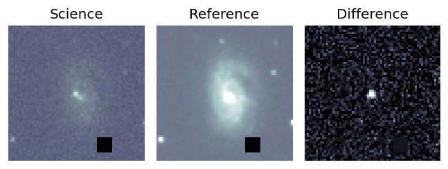
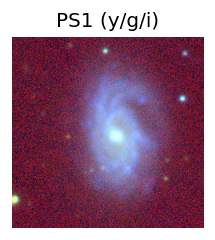
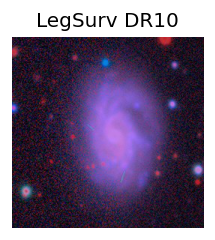
TESS: Sectors [ 26 40 52 53 79 80 118]
NED host (10 arcsec):Found CGCG 171-021 (G, 2.9″); NED spec-z: z=0.0249 [zflag SUN]; peak abs mag = -17.60
PS1: 0 sources in 3 arcsec
LegacySurvey: 1 sources in 3 arcsec Closest: d = 2.94 arcsec, 244.9 deg (east of north) photoz=0.03 (68% bounds 0.02, 0.03), type=SER peak abs mag (ext. corrected) = -17.62 (68% bounds -17.4, -18.0)
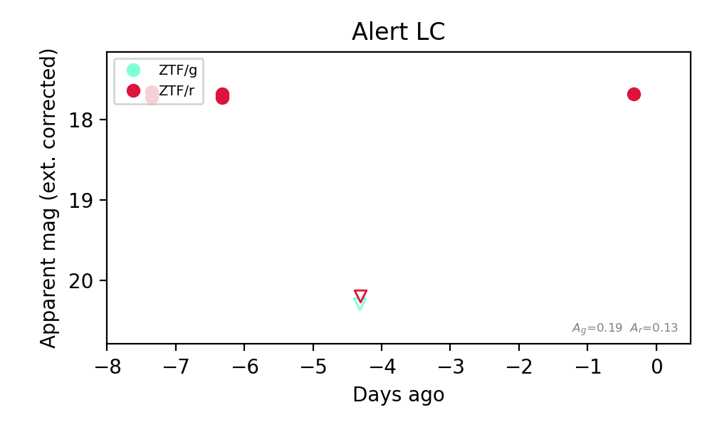
Rise Rate:
r: 2.8 mag/day
Fade Rate:
r: 1.25 mag/day
1. [ZTF] ZTF26abvdwfx (Afterglow?) [Back to Top] [Share] [Trigger Swift] [Fritz Alert] [Fritz Source] [Lasair]RA, Dec: 291.84662, 43.73915 19h27m23.19s, 43d44m20.93sGalactic (l, b): 75.9883, 12.40436 ext(g-r) = 0.178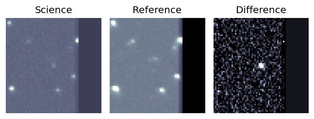
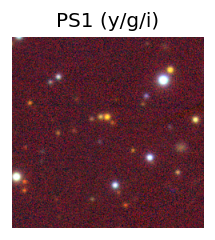

TESS: Sectors [ 15 40 41 54 55 74 75 81 82 119 120]
PS1: 0 sources in 3 arcsec
LegacySurvey: 0 sources in 3 arcsec
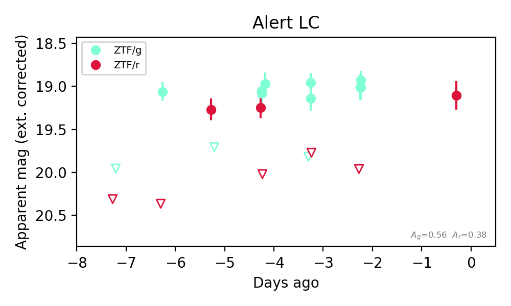
Extinction-corrected gr color:
From alerts: -0.99 +/- 99 mag
Rise Rate:
r: 1.08 mag/day
Fade Rate:
r: 22.35 mag/day
2. [ZTF] ZTF26abvdwrk (Afterglow?) [Back to Top] [Share] [Trigger Swift] [Fritz Alert] [Fritz Source] [Lasair]RA, Dec: 302.08273, 50.6744 20h 8m19.85s, 50d40m27.83sGalactic (l, b): 85.56495, 9.61516 ext(g-r) = 0.21


TESS: Sectors [ 14 15 16 41 54 55 56 75 76 81 83 120 121]
PS1: 1 source in 3 arcsec Closest: d = 6.61 arcsec photoz=0.35+/-0.11 peak abs mag = -23.41
LegacySurvey: 0 sources in 3 arcsec

Extinction-corrected gr color:
From alerts: 0.17 +/- 0.14 mag
Consistent with synchrotron, g-r>0!
Rise Rate:
r: 0.58 mag/day
Fade Rate:
3. [ZTF] ZTF26abwafvw (FBOT?) [Back to Top] [Share] [Trigger Swift] [Fritz Alert] [Fritz Source] [Lasair]RA, Dec: 273.95735, 42.77599 18h15m49.76s, 42d46m33.55sGalactic (l, b): 70.24161, 24.25288 ext(g-r) = 0.04


TESS: Sectors [ 26 40 52 53 54 74 79 81 119]
PS1: 0 sources in 3 arcsec
LegacySurvey: 1 sources in 3 arcsec Closest: d = 0.69 arcsec, 314.9 deg (east of north) photoz=0.96 (68% bounds 0.76, 1.16), type=REX peak abs mag (ext. corrected) = -25.28 (68% bounds -24.66, -25.78)

Extinction-corrected gr color:
From alerts: -0.28 +/- 0.17 mag
Rise Rate:
g: 1.06 mag/day
r: 0.77 mag/day
Fade Rate:
4. [ZTF] ZTF26abwavuu (Afterglow?FBOT?) [Back to Top] [Share] [Trigger Swift] [Fritz Alert] [Fritz Source] [Lasair]RA, Dec: 279.15984, 53.24782 18h36m38.36s, 53d14m52.16sGalactic (l, b): 82.28404, 23.56007 ext(g-r) = 0.059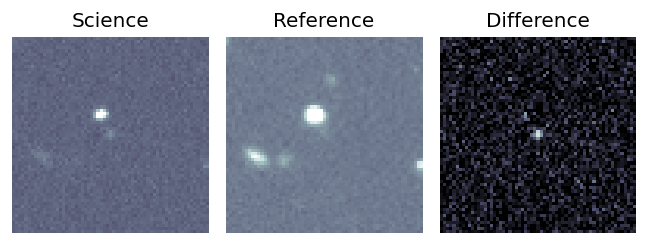
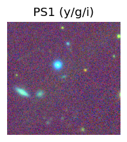
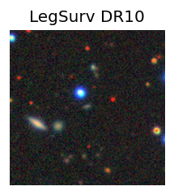
TESS: Sectors [ 14 15 19 22 25 26 40 41 52 53 54 55 56 58 59 73 74 75
79 80 81 82 83 86 117 118 120 121]
PS1: 0 sources in 3 arcsec
LegacySurvey: 1 sources in 3 arcsec Closest: d = 0.30 arcsec, 16.1 deg (east of north) photoz=0.18 (68% bounds 0.09, 0.44), type=EXP peak abs mag (ext. corrected) = -20.19 (68% bounds -18.61, -22.45)
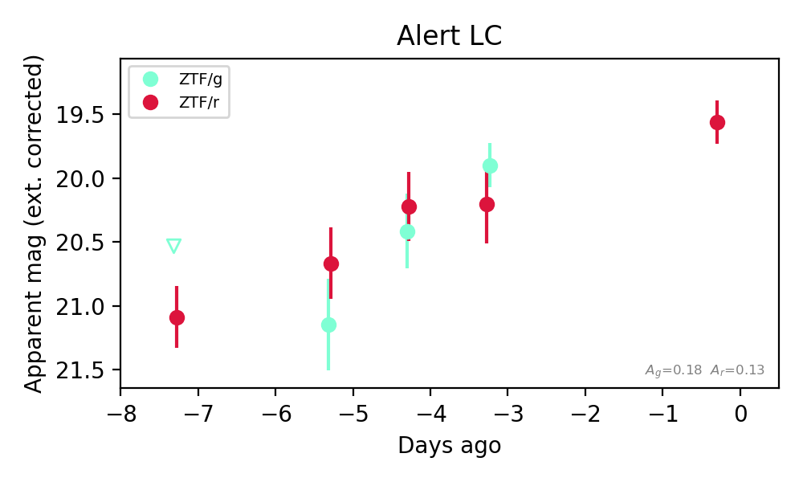
Extinction-corrected gr color:
From alerts: -0.31 +/- 0.35 mag
Consistent with synchrotron, g-r>0!
Rise Rate:
g: 0.58 mag/day
r: 0.22 mag/day
Fade Rate:
5. [ZTF] ZTF26abwecph (Afterglow?) [Back to Top] [Share] [Trigger Swift] [Fritz Alert] [Fritz Source] [Lasair]RA, Dec: 4.58635, 38.2112 0h18m20.72s, 38d12m40.33sGalactic (l, b): 115.81141, -24.20258 ext(g-r) = 0.074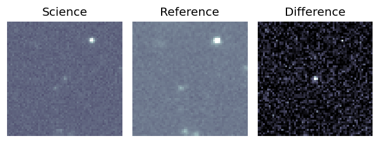
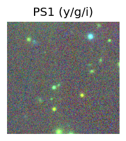

TESS: Sectors [17 57 84]
PS1: 1 source in 3 arcsec Closest: d = 4.84 arcsec photoz=0.67+/-0.09 peak abs mag = -23.93
LegacySurvey: 0 sources in 3 arcsec
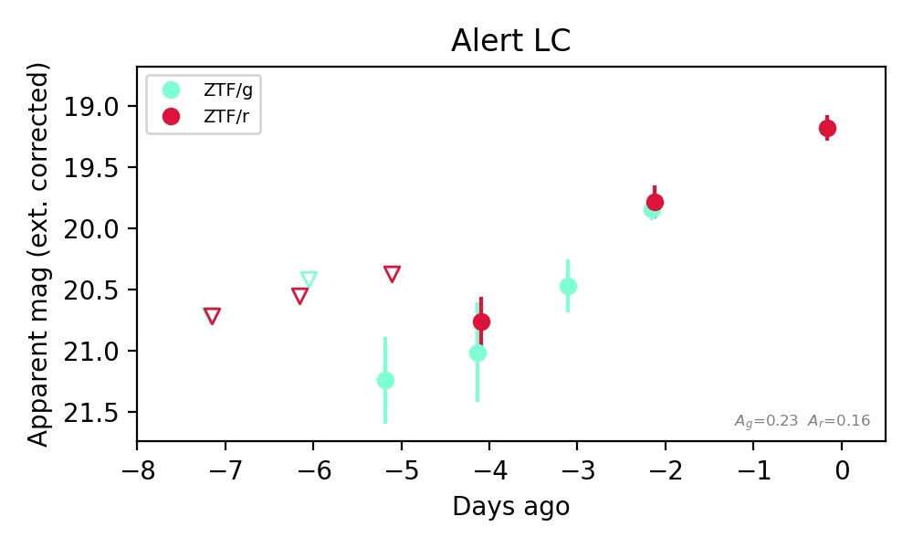
Extinction-corrected gr color:
From alerts: 0.06 +/- 0.16 mag
Consistent with synchrotron, g-r>0!
Rise Rate:
g: 0.51 mag/day
r: 0.38 mag/day
Fade Rate:
6. [ZTF] ZTF26abwqcyz (Afterglow?) [Back to Top] [Share] [Trigger Swift] [Fritz Alert] [Fritz Source] [Lasair]RA, Dec: 51.13852, 46.72869 3h24m33.25s, 46d43m43.28sGalactic (l, b): 148.35437, -8.44608 ext(g-r) = 0.421


TESS: Sectors [18 58 86]
PS1: 1 source in 3 arcsec Closest: d = 2.29 arcsec photoz=0.08+/-0.01 peak abs mag = -19.05
LegacySurvey: 0 sources in 3 arcsec

Extinction-corrected gr color:
From alerts: -0.03 +/- 0.34 mag
Consistent with synchrotron, g-r>0!
Rise Rate:
g: 0.6 mag/day
r: 0.38 mag/day
Fade Rate:
7. [ZTF] ZTF26abwqfcv (FBOT?) [Back to Top] [Share] [Trigger Swift] [Fritz Alert] [Fritz Source] [Lasair]RA, Dec: 48.84407, 25.01122 3h15m22.58s, 25d 0m40.38sGalactic (l, b): 159.7749, -27.37649 ext(g-r) = 0.148


TESS: Sectors [18 42 43 44 70 71]
PS1: 1 source in 3 arcsec Closest: d = 0.77 arcsec photoz=0.38+/-0.14 peak abs mag = -21.95
LegacySurvey: 0 sources in 3 arcsec

Extinction-corrected gr color:
From alerts: 0.91 +/- 99 mag
Rise Rate:
r: 0.26 mag/day
Fade Rate:
8. [ZTF] ZTF26abwrwuk (FBOT?) [Back to Top] [Share] [Trigger Swift] [Fritz Alert] [Fritz Source] [Lasair]RA, Dec: 6.68483, -0.55111 0h26m44.36s, 0d-33m-4.01sGalactic (l, b): 109.33723, -62.76913 WARNING: -3.16 deg from ecliptic plane ext(g-r) = 0.021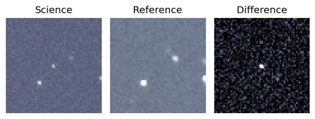
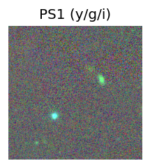
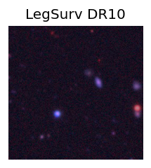
TESS: Sectors [42 43 70]
PS1: 0 sources in 3 arcsec
LegacySurvey: 1 sources in 3 arcsec Closest: d = 0.44 arcsec, 321.1 deg (east of north) photoz=1.03 (68% bounds 0.72, 1.6), type=REX peak abs mag (ext. corrected) = -25.12 (68% bounds -24.17, -26.3)
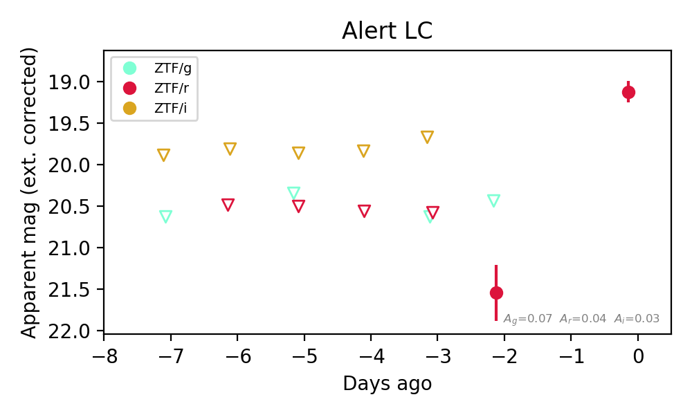
Extinction-corrected gr color:
From alerts: -1.11 +/- 99 mag
Rise Rate:
r: 1.22 mag/day
Fade Rate: